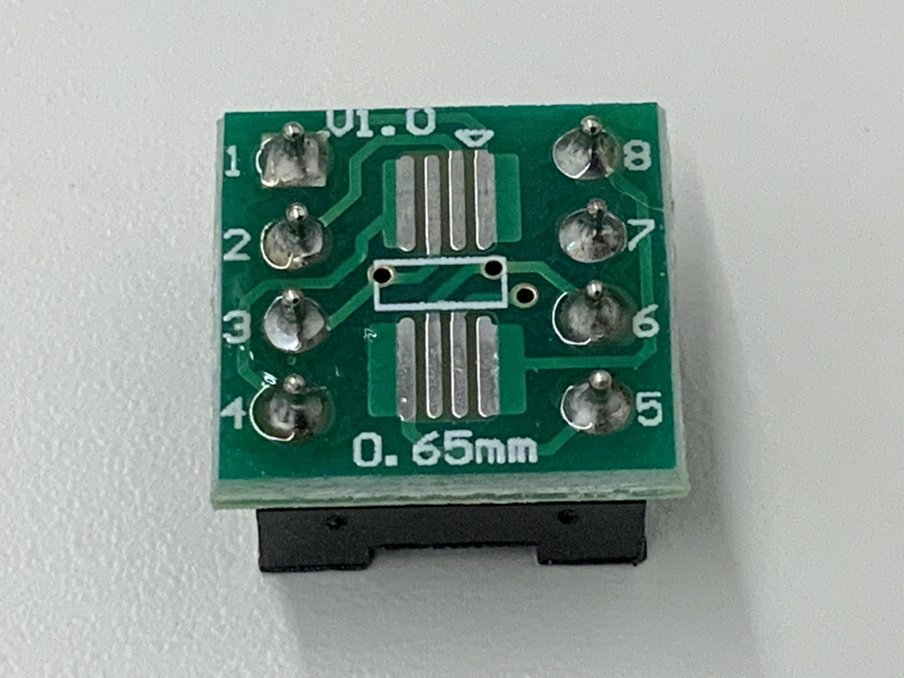
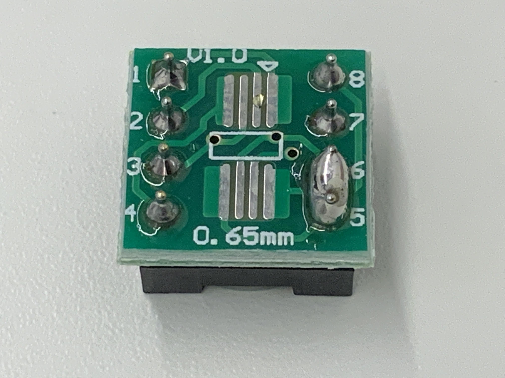
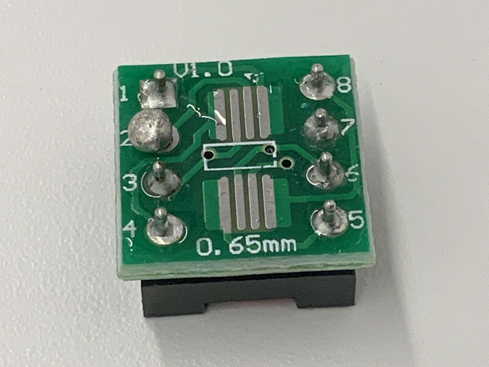

はんだ不良判別AI
最新のアルゴリズム>YOLOv8を活用した、はんだ付けの不良判別システム。画像内のはんだ接合部を自動検出し、正常・不良（未はんだ等）をリアルタイムで識別することを目指しました。
使用技術
- AI / Model: YOLOv8 (yolov8x-cls.pt / 4クラス分類)
- Library / API: Ultralytics, Scikit-learn, Pandas
- Logic / Tools: Python, Google Colab
開発のプロセスと工夫
1. 少量データに対する前処理の徹底
手元の画像データが限られていたため、モデルの過学習を抑制。Pythonでデータを自動分割し、学習時に強力なデータ拡張を適用することで、少ないサンプルから効率的な学習を可能にしました。
2. 検証データに基づく最適モデルの選定
早期終了設定を用い、検証データで最も高い性能を自動選定。数値指標と実際の推論結果を照らし合わせ、客観的に評価しました。



解析に使用したはんだ接合部のサンプル画像
実装の全行程（データ拡張、学習、検証プロセス）は、
こちらのGoogle Colabノートブックで公開しています。
評価と今後の展望
現在の到達点
データ拡張と検証プロセスの工夫により、限られた環境下でもある程度識別能力を持つモデルを構築。機械学習の「実装」と「評価」の基礎を習得しました。
次なる課題
汎用性の向上: 最終的なテスト結果は９割程度で、識別能力には課題が残ります。今後はさらなるデータ拡張やモデルの最適化を目指します。